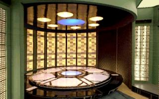
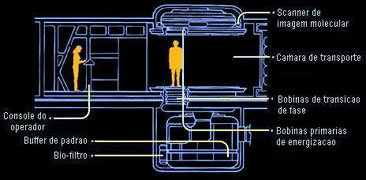
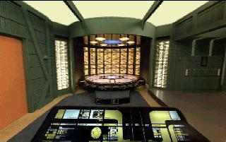
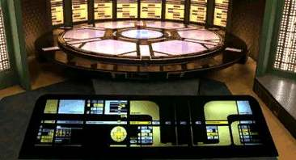
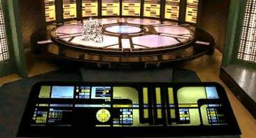
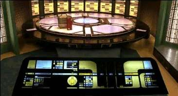

|
Tudo sobre a nave estelar Enterprise (NCC-1701-D) e toda a
tecnologia que permeia o século 24 você aprende por aqui.
|

|
Sistemas de transporte  por Tiago Duarte Nota
do tradutor, por Tiago Duarte Este novo tópico na enciclopédia do Trek Brasilis nos traz uma das tecnologias mais complexas a bordo da Enterprise, provavelmente ultrapassada somente pelo próprio motor de dobra. Todo o texto foi extraído do livro Star Trek: The Next Generation Technical Manual, escrito pelos criadores de quase toda a tecnologia do século 24: Michael Okuda (de onde deriva o termo Okudagram, também conhecido como LCARS, que é o “sistema operacional” dos computadores da nave) e Rick Sternbach. Michael foi o supervisor de artes cênicas durante toda A Nova Geração e responsável por criar todos os painéis, avisos, adesivos, escritas alienígenas e desenhos mostrados na série. Rick também foi parte da equipe durante toda a duração do seriado, como ilustrador sênior, e sua responsabilidade era desenhar todas as naves, props (desde canecas de café até dispositivos médicos) e qualquer objeto que um tripulante pudesse usar em cena. Alguns termos neste texto são extremamente técnicos e por isso a tradução tornou-se um pouco complicada. Preferi deixar poucos itens sem tradução, apenas por não conseguir encontrar um termo adequado (“buffer” e “scanner” são dois exemplos). Sugiro (seguindo a recomendação dos próprios autores) que ao ler este artigo, mantenham suas mentes abertas ao se deparar com as impossibilidades cientificas que aparecem de vez em quando. Usando uma frase já muito batida, mas nem por isso menos válida: “a ficção científica de hoje é o fato científico de amanhã”. Com isso em mente, aprenda agora tudo sobre o transporte, sem ter que ser desmaterializado e convertido em energia no processo.
Notas
da produção, por Rick Sternbach O
transporte é um dos conceitos mais brilhantes de Jornada nas
Estrelas. Ele permite aos personagens ir de um lugar ao outro
de maneira rápida e eficaz durante a história. Em Jornada nas
Estrelas: A Nova Geração, foi sugerido que a tecnologia de
transporte avançou até o ponto em que é capaz de sintetizar
objetos. Esta é uma idéia interessante, mas deve haver algumas
restrições, senão seria possível reproduzir um objeto raro ou
valioso, ou até mesmo trazer pessoas de volta à vida. Tais
habilidades seriam danosas ao processo de desenvolvimento de uma
história. A idéia de manter os objetos sintetizados, armazenados
numa “resolução molecular”, em vez de uma “resolução quântica”,
foi sugerida como uma resposta a este problema. Na verdade, houve
algumas ocasiões nas quais o transporte foi usado para “salvar
o dia” no final do episódio, mas os escritores sempre tentam
evitar tais usos para a tecnologia em questão. A idéia de que transportadores seriam incapazes de funcionar em dobra foi sugerida no episodio “The Schizoid Man” da segunda temporada. No entanto, nós percebemos que impor esta regra iria trazer problemas para alguns escritores, então tomamos o cuidado de sugerir um “atalho”: o de que você poderia de fato se transportar em dobra, desde que ambos os pontos de destino e origem estejam no mesmo fator de dobra. Como esperado, tal situação realmente aconteceu em “Best of Both Worlds” e o chefe de transporte O’Brien a confirma na fala em que diz que “as velocidades de dobra são compatíveis para o transporte”. Um último detalhe: o console do operador de transporte tem três barras luminosas sensíveis ao toque, que controlam o processo de transporte. Isto foi planejado como uma homenagem à Serie Clássica, na qual Scotty operava três botões que deslizavam de baixo para cima para acionar o transporte.
Introdução O
transporte extra-veicular de e para a
Enterprise é realizado pelos sistemas de transporte, que permite
que pessoal e equipamentos sejam transportados para distâncias de
até 40.000 quilômetros. O
transporte para a tripulação e convidados é fornecido por
quatro transportadores pessoais localizados no deck 6 da seção
disco. Dois transportadores pessoais adicionais estão localizados
no deck 14 na seção de engenharia. O
transporte de carga é fornecido por quatro transportadores de
baixa resolução localizados no deck 4, na área de carga, e
outros quatro localizados nos decks 38 e 39, também na área de
carga. Estas unidades são projetadas primariamente para trabalhar
com resolução molecular (não apropriada para formas de vida)
para o transporte de carga, mas podem ser configuradas para uma
resolução quântica (apropriada para formas de vida) se for
necessário, embora tal alteração incorra em uma redução drástica
na capacidade de massa transportável. A
evacuação
de emergência da nave é feita por seis transportadores de emergência,
quatro destes localizados na seção disco, e outros dois na seção
de engenharia. Estes transportadores são equipados com bobinas de
transição de fase de grande volume que operam em modo “somente
leitura” e são capazes apenas de efetuar transportes (não
podendo receber matéria). Estes transportadores de emergência são
preparados para operar com um gasto mínimo de energia, se
comparados às unidades padrão, mas têm, em contrapartida, um
alcance e capacidade de compensação Doppler reduzidas. O alcance
típico para estas unidades é de 15.000 quilômetros, dependendo
da energia disponível para a operação. Cada
par de transportadores é desenhado para compartilhar um único
tanque de buffer de padrão de transporte, normalmente localizado
no deck inferior à câmara, diretamente abaixo dela. Os
transportadores de emergência são projetados para acessar os
buffers de padrão dos transportadores primários, para
suplementar seus próprios buffers. Esta duplicação do hardware
resulta em uma perda de apenas 31% na capacidade de carga, mas
gera quase 50% de aumento na capacidade de trabalho do sistema em
situações de emergência. O casco externo da Enterprise incorpora uma série de dezessete conjuntos emissores de transporte. Nestes emissores estão incorporados scanners moleculares de foco virtual de longo alcance e bobinas de transição de fase. Os emissores estão estrategicamente posicionados para proporcionar uma cobertura de 360 graus, em todos os eixos. Existe ainda uma sobreposição da cobertura dos emissores para fornecer uma operação adequada, mesmo no evento de falha em até 40% dos emissores.  Operação
dos sistemas de transporte A
operação do transporte pode ser dividida em cinco estágios
principais. Por causa da natureza crítica deste sistema, regras
de operação normal requerem que um chefe de transporte
supervisione e monitore a operação do sistema. (Nota: Esta seção
descreve uma seqüência de transporte da câmara para um destino
remoto. A seqüência de um local remoto para a câmara de
transporte envolve os mesmos elementos do sistema, embora numa
ordem e configuração diferentes.) - - Energizar e desmaterializar. O scanner molecular produz em tempo real uma cópia do padrão do tripulante enquanto as bobinas primárias de energização e bobinas de transição de fase convertem o tripulante em um filamento de matéria separada subatomicamente. -
Compensação
Doppler do padrão no buffer. O filamento de matéria é mantido no buffer de padrão por um
breve período, permitindo ao sistema compensar o efeito Doppler
entre a nave e o destino do transporte. O buffer de padrão serve
também como um dispositivo de segurança no caso de uma falha no
sistema, permitindo que o transporte seja abortado e desviado para
outra câmara. - Transmissão do filamento de matéria. O ponto exato de saída da nave é um dos dezessete conjuntos emissores que transmitem o filamento de matéria dentro de um campo de confinamento anular. 
Componentes
do sistema Os componentes principais do sistema incluem: -
Câmara
de transporte.
É a área protegida na qual acontece o ciclo de materialização/desmaterialização.
A plataforma da câmara é elevada acima do piso para reduzir a
possibilidade de uma descarga estática possivelmente perigosa,
que às vezes acontece durante o processo de transporte. - Console
do operador.
Esta estação de controle permite ao chefe de transporte
monitorar e controlar todas as funções do transportador. Ela
também permite o cancelamento de seqüências automáticas e
outras funções de controle. - Controlador
de transporte.
Este sub-processador do computador está localizado ao lado da própria
câmara. Ele gerencia a operação dos sistemas de transporte,
incluindo as seqüências automáticas. - Bobinas
energizadoras primárias.
Localizadas no topo da câmara de transporte, estas bobinas
criam um poderoso Campo de Confinamento Anular (CCA), que cria uma
matriz espacial na qual o processo de materialização/desmaterialização
acontece. Um campo secundário mantém o tripulante dentro do CCA
(este item é uma precaução, visto que a interrupção do CCA
durante os estágios iniciais de desmaterialização pode resultar
numa descarga intensa de energia). - Bobinas
de transição de fase.
Localizadas no piso da câmara de transporte. Estes
dispositivos de manipulação de quarks realizam efetivamente o
processo de desmaterialização/materialização, removendo a
energia de ligação entre as partículas subatômicas. Todos os
transportadores de pessoal são desenhados para operar com uma
resolução quântica (necessária para o transporte de formas de
vida). Transportadores de carga são geralmente otimizados para
trabalhar no modo molecular (mais eficientes energeticamente), mas
podem também ser configurados para resolução quântica se
necessário. - Scanner
de imagem molecular.
Cada posição ("pad") na câmara de transporte
possui uma parte inferior (onde o tripulante fica) e uma parte
superior (localizada logo acima do tripulante). Cada pad superior
incorpora quatro conjuntos redundantes de scanners de imagem
molecular de 0.0012m
em intervalos de 90º em volta do eixo primário do pad. Rotinas
de checagem de erros permitem que qualquer um dos scanners seja
ignorado se os seus resultados diferirem dos outros três. Uma
falha em dois ou mais scanners resulta em uma abortagem automática
do processo de transporte. Cada scanner está desalinhado 3.5’
de arco do eixo do CCA, permitindo uma derivação das informações
do estado quântico usando uma série de compensadores Heisenberg.
Os dados do estado quântico não são usados quando o
transportador está em modo de carga (resolução molecular). - Buffer
de padrão.
Este dispositivo tokamak supercondutor “atrasa” a transmissão
do filamento de matéria até que o compensador Doppler possa
compensar o movimento relativo entre os emissores e o destino. Um
único buffer de padrão é compartilhado por cada par de câmaras
de transporte. Regras de operação exigem que pelo menos mais um
buffer esteja livre no sistema, para o caso de um desvio de emergência.
Em situações de emergência, o buffer de padrão é capaz de
armazenar todo o filamento de matéria em suspensão por períodos
de até 420 segundos, antes que a degradação do padrão comece a
ocorrer. - Bio-filtro.
Normalmente usado apenas em transportes para a nave (subida), este
dispositivo de processamento de padrão faz uma varredura no
filamento de matéria que está chegando e procura por padrões
que correspondem a formas bacteriológicas e virais conhecidas. No
caso da detecção de tais padrões, o biofiltro remove estas partículas
do filamento de matéria. - Conjunto
emissor.
Montado no exterior da nave, esses conjuntos transmitem o conteúdo
do CCA e do filamento de matéria para as (ou das) coordenadas de
destino. O conjunto emissor inclui uma matriz de transição de
fase e bobina primária de energização. Também incorporadas a
estes conjuntos, estão três blocos redundantes de scanners
moleculares de foco virtual de longo alcance usados durante o
processo de transporte originado em um ponto remoto. Usando técnicas
de inversão de fase, estes emissores podem também transportar
itens de/para coordenadas dentro do volume habitável da própria
nave. - Scanners
de destino.
Um grupo de quinze blocos de sensores, parcialmente
redundantes localizados nos conjuntos sensores laterais,
superiores e inferiores. Estes dispositivos determinam as
coordenadas de transporte, incluindo direção, distância, e
velocidade relativa do destino do transporte. Os scanners de
destino também produzem informações ambientais sobre o local de
destino. Coordenadas de transporte também podem ser geradas pelos
scanners de navegação, táticos e de comunicação. Para
transporte interno ponto-a-ponto, as coordenadas podem ser obtidas
dos sensores internos da nave. Tripulantes podem ser localizados
para transporte através de seus comunicadores.
Operação
do transporte – Linha de tempo O
procedimento de transporte necessita que um grande número de
operações intrincadas seja executado com intervalos de
milisegundos entre si, com margens de erro extremamente pequenas.
Por esta razão, a maior parte do processo de transporte é
altamente automatizada, embora protocolos de operação exijam a
supervisão de um chefe de transporte. O operador deve,
geralmente, verificar o travamento das coordenadas e a prontidão
do sistema. A seqüência do processo em si é conduzida pelos
programas de auto-sequência do controlador de transporte, sob a
supervisão do operador. A seguir, você encontra uma tabela
contendo os principais eventos durante o programa de auto-sequência
(os tempos são estimados e podem variar de acordo com a distância
e carga a ser transportada):
  Durante a seqüência de transporte  Seqüência completada
Outras
funções do transportador - Subida. Este processo é muito similar ao descrito acima, exceto que o conjunto emissor faz o papel das bobinas energizadoras primárias e que o sinal é normalmente processado pelo biofiltro. - Transporte ponto-a-ponto. Refere-se a um processo de transporte duplo, no qual um item é desmaterializado em um ponto remoto e roteado a uma câmara de transporte. No entanto, ao invés de ser materializado como num processo de subida normal, o filamento de matéria é enviado a um segundo buffer de padrão e então para um segundo conjunto emissor, que direciona o item ao destino final. Este processo de transporte direto consome quase o dobro de energia de um transporte normal e não é normalmente usado, exceto em situações de emergência. Transportes de ponto-a-ponto não são usados em situações de emergência que necessitam que um grande número de indivíduos seja transportado, porque na verdade ele reduz pela metade a capacidade total do sistema, devido ao tempo mínimo do ciclo de transporte (ver “Limitações de uso”). - Manter no buffer de padrão. Um item transportado que ainda não começou o ciclo de materialização pode ser mantido no buffer sem degradação do padrão por até 420 segundos, dependendo da quantidade de massa do item. Embora o procedimento normal seja direcionar o filamento de matéria diretamente para o conjunto emissor assim que a compensação Doppler estiver sincronizada, esta opção de “manter” pode ser executada caso seja detectado algum problema com o conjunto emissor ou os dutos condutores, que transportam o filamento de matéria até o conjunto emissor. Esta opção também está disponível à discrição do operador por motivos de segurança, em situações em que é interessante deter um indivíduo por um período de tempo até a chegada de um destacamento de oficiais de segurança. - Transporte em resolução molecular. Objetos vivos são sempre transportados em resolução quântica, mas no interesse de conservação de energia, muitos objetos de carga são transportados na resolução molecular, que é mais baixa. Embora transportadores pessoais operem sempre em resolução quântica, eles podem ser configurados para transporte de carga se necessário. - Dispersão. Desativar o campo de confinamento anular irá deixar o filamento de matéria que está se materializando sem nenhum ponto de referência para se formar. Neste caso, o item transportado irá se formar de maneira aleatória, normalmente tomando a forma de gases dissociados e partículas microscópicas. Caso o operador desative a auto-seqüência, ele poderá forçar a desativação do CCA, permitindo a dispersão inofensiva de um item transportado perigoso, tal como um dispositivo explosivo. Duas travas de segurança previnem que esta opção seja acionada acidentalmente. Tal dispersão normalmente é realizada transportando o item para o espaço exterior à nave. -
Transporte próximo à
dobra. Transporte
através de um campo subespacial de baixa intensidade (menos de
1.000 milicochranes) requer uma série de ajustes à seqüência
de transporte, incluindo uma elevação da freqüência do CCA
para 57 MHz para compensar pela distorção subespacial. - Transporte em dobra. O transporte através de um campo de dobra requer uma elevação similar a 57 MHz do CCA. Além disso, a nave e o ponto de destino devem estar contidos num campo de dobra de valor integral igual. Qualquer problema mantendo a equivalência dos campos de dobra irá resultar em uma grave perda de integridade do CCA e da integridade do padrão. Tal perda de integridade é fatal em formas de vida sendo transportadas. -
Varredura
do biofiltro.
Sinais de transporte chegando à nave são automaticamente
analisados em busca de padrões conhecidos de uma grande variedade
de formais bacteriológicas e virais. Quando tais padrões são
detectados, técnicas limitadas de manipulação quântica são
empregadas para tornar estas formas inertes ou removê-las do
filamento de matéria.
Limitações
de uso Os
transportadores de pessoal e carga são enormemente úteis na
operação da nave, mas estão sujeitos a limitações de uso.
Algumas das principais limitações na operação do transporte
incluem: - Alcance. O alcance normal durante a operação é de aproximadamente 40.000 quilômetros, dependendo da massa a ser transportada e velocidade relativa entre origem e destino. Transportadores de emergência têm uma capacidade mais limitada e sofrem uma limitação de 15.000 quilômetros, novamente, dependendo da energia disponível. -
Interferência
dos escudos defletores.
Quando os escudos defletores estão erguidos em posição
defensiva, é impossível para o CCA se propagar apropriadamente
através do espectro eletro magnético e subespacial.
Adicionalmente, distorções espaciais criadas pelos escudos podem
afetar a integridade do padrão. Por estas razões, não é possível
executar o transporte quando os escudos estão ativos. - Ciclo
de transporte.
Embora a auto-seqüência do transporte dure aproximadamente cinco
segundos, o resfriamento e reset do buffer de padrão levam em média
oitenta e sete segundos, gerando um ciclo de transporte de
aproximadamente noventa e dois segundos. Já que os dutos
condutores permitem que o filamento de matéria seja direcionado
para qualquer buffer de padrão, uma câmara de transporte pode
ser reutilizada imediatamente, sem esperar o resfriamento do
buffer, através do direcionamento do filamento para outro buffer
de padrão. Considerando que existem apenas três buffers de padrão
para uso de transporte de pessoal, este processo pode ser repetido
duas vezes antes que se precise esperar pelo resfriamento do
buffer da câmara em uso. Isto se traduz numa média de 1.9
transportes de seis pessoas por minuto, resultando numa capacidade
total do sistema a algo em torno de setecentas pessoas por hora. - Transporte
em Dobra. Campos
de dobra produzem distorções espaciais intensas nos sinais de
transporte, tornando impossível se transportar enquanto a nave
está em dobra. A única exceção é quando ambos os pontos, de
origem e destino, estão viajando na mesma velocidade integral de
dobra. - Limites
dos sintetizadores.
O transporte de pessoal é feito num nível quântico usando
uma imagem analógica do padrão do item a ser transportado. Em
contraste, a síntese de alimentos e ferramentas (que emprega a
tecnologia de transporte) usa uma imagem digital muito mais
limitada, de resolução molecular. Por causa desta limitação, a
síntese de matéria viva não é possível.
Evacuação
por transporte Os
sistemas de transporte são muito úteis durante missões que
necessitam trazer (ou enviar) um grande número de indivíduos
para a nave em um curto período de tempo. O uso do transportador
impõe exigências específicas no perfil da missão de resgate: -
Evacuação para a
nave. - Evacuação
da nave.
A evacuação de emergência da Enterprise pode ser
realizada com uma maior eficiência considerando-se a existência
de seis transportadores de emergência capazes de transportar
vinte e duas pessoas de cada vez para fora da nave. Estas
unidades, que são incapazes de transportar para
a nave, compartilham os buffers de padrão dos transportadores
pessoais, mas empregam bobinas de transição de fase maiores,
capazes apenas de efetuar a leitura
de um padrão, gerando um acréscimo de 370% na capacidade de
massa sobre as unidades padrão, embora seu alcance seja limitado
a 15.000 quilômetros (comparados aos 40.000 quilômetros das
unidades padrão). Como resultado, quando os transportadores de
emergência são usados para suplementar os transportadores de
pessoal e carga, a taxa é elevada a 1.850 pessoas por hora. Os transportadores de emergência ainda têm outra vantagem significante: a de usar menos energia. Isto pode ser de grande importância durante situações de crise, quando a energia disponível é limitada. Em tais casos, o transporte pode ser restrito a apenas os transportadores de emergência, resultando numa taxa de evacuação de mais ou menos mil pessoas por hora, devido ao fato de as bobinas de transição de fase de menor potência levarem um tempo maior para descarregar.
|